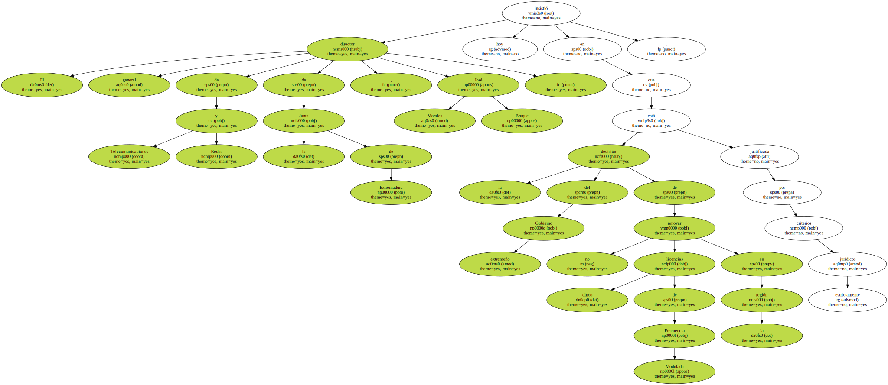
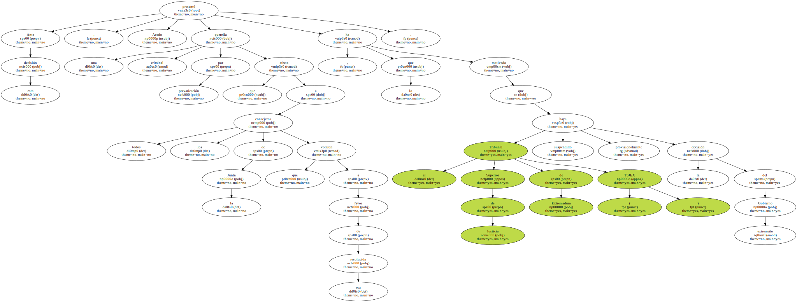
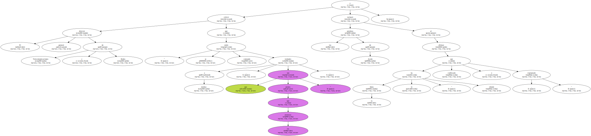
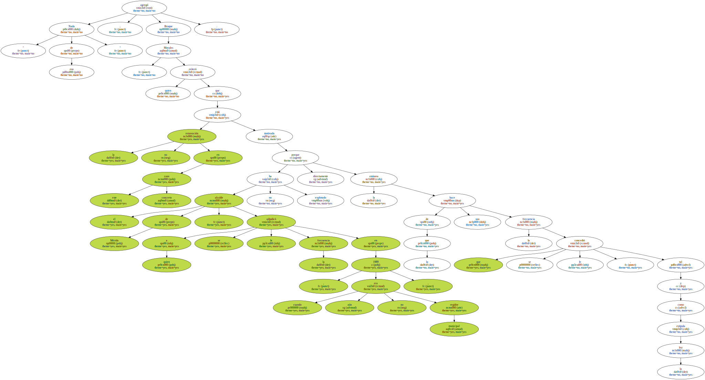
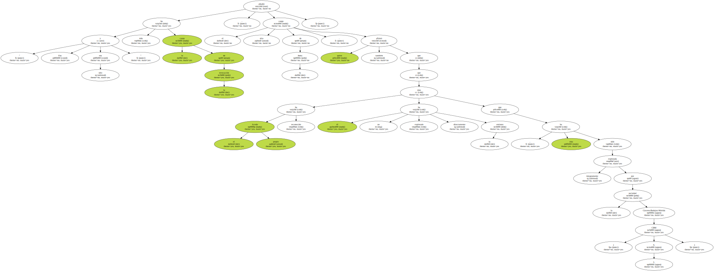
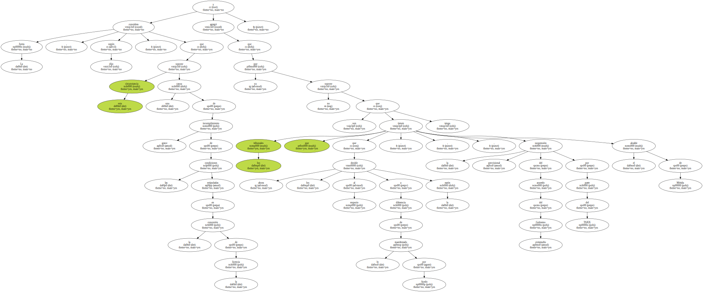
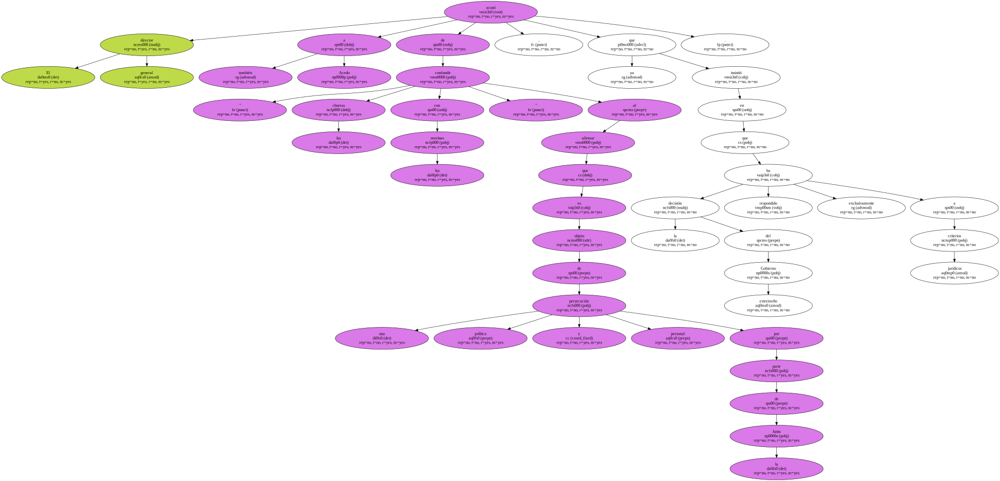
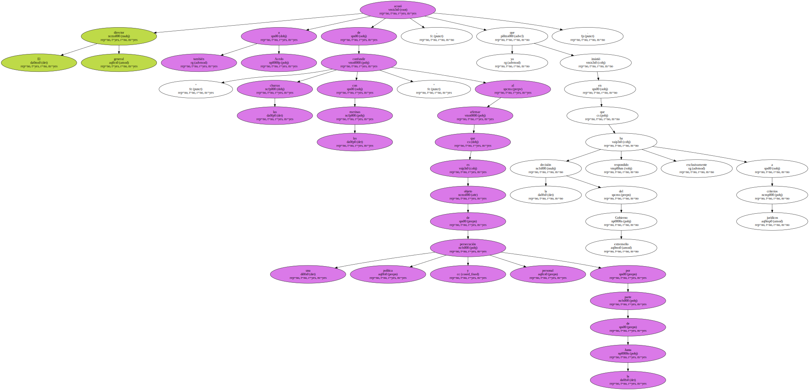

El director general de Telecomunicaciones y Redes de la Junta de Extremadura , José Morales Bruque , insistió hoy en que la decisión del Gobierno extremeño de no renovar cinco licencias de Frecuencia Modulada en la región está justificada por criterios estrictamente jurídicos.
Morales Bruque denunció la " ceremonia de la confusión que se ha creado en torno a este tema " e hizo especial hincapié al caso del alcalde de Mérida , Pedro Acedo , del PP , a quien no se le ha renovado la licencia de explotación de la emisora de FM de la que es titular en Don Benito ( Badajoz ) , afiliada a la COPE.

Ante esta decisión , Acedo presentó una querella criminal por prevaricación que afecta a todos los consejeros de la Junta que votaron a favor de esa resolución , lo que ha motivado que el Tribunal Superior de Justicia de Extremadura ( TSJEX ) haya suspendido provisionalmente la decisión del Gobierno extremeño.
El director general de Telecomunicaciones y Redes criticó que " se estén contando verdades a medias , que son peores que las mentiras " , y rechazó las palabras de Acedo al afirmar que la Junta le ha " robado , confiscado o expropiado ".
" Nada de eso " , agregó Morales Bruque , quien reiteró que la no renovación en este caso concreto está motivada porque el alcalde de Mérida , a quien se le adjudicó la frecuencia en 1989 , cuando aún no era regidor municipal , no ha explotado directamente la emisora de la que hace uso la frecuencia que se le concedió , tal y como estipula la ley.
" Esa y sólo esa " ha sido la causa de la revocación , añadió el alto cargo de la Junta , quien afirmó también que el propio Acedo ha reconocido que él no ha explotado directamente la emisora , sino que ésta ha sido explotada íntegramente por la sociedad Cáceres-Badajoz-Mérida ( CBM S. L ).
La Junta considera , según dijo , que esta circunstancia supone una causa de incumplimiento grave de las condiciones estipuladas en la concesión de la licencia y agregó que ahora son los tribunales los que tienen que decidir al respecto , ya que , a diferencia de lo manifestado por Acedo , la suspensión provisional del acuerdo del Gobierno extremeño por parte del TSJEX no supone que el alcalde de Mérida tenga la razón.
El director general acusó también a Acedo de " confundir las churras con las merinas " al afirmar que es objeto de una persecución política y personal por parte de la Junta , ya que insistió en que la decisión del Gobierno extremeño ha respondido exclusivamente a criterios jurídicos.
Destacó que " no ha habido el más mínimo asomo de partidismo ni de amiguismo " y recordó que también se han retirado en Extremadura dos licencias a Blas Herrero , que , según han afirmado algunos medios de comunicación , es un empresario muy afín " al PSOE , porque es íntimo amigo de Alfonso Guerra ".
